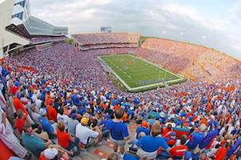

<!DOCTYPE html>
<html lang="en">
  <head>
    <meta charset="UTF-8" />
    <title>Leaflet Demo</title>
    <link href="css/leaflet.css" rel="stylesheet" />
    <link href="css/leaflet-style.css" rel="stylesheet" />
  </head>

  <body>

    <div id="map"></div>

    <script src="js/leaflet.js"></script>
    <script>

      var ufMap = L.map("map").setView([29.6462082,-82.349312,16], 15);

      L.tileLayer('https://{s}.tile.openstreetmap.org/{z}/{x}/{y}.png', {
        maxZoom: 15,
        attribution: '&copy; <a href="http://www.openstreetmap.org/copyright">OpenStreetMap</a>'
      }).addTo(ufMap);


      // jSchool marker
      var jSchool = L.marker([29.64796, -82.34755]).addTo(ufMap);

      jSchool.bindPopup("University of Florida <a href='http://jou.ufl.edu'>College of Journalism and Communications</a>. I earned two from degrees here!");


      // Beaty Towers (polygon example)

      var dorm = L.polygon([
          [29.64457, -82.34076],
          [29.64382 , -82.34076],
          [29.64382, -82.33999],
          [29.64457, -82.33999]
      ],
      {
        color: "#0021A5",
        fillColor: "#0021A5",
        fillOpacity: 0.3
      }).addTo(ufMap);

      dorm.bindPopup("Beaty Towers. Some crazy stuff went on here! What happens in Beaty Towers stays in Beaty Towers.");


      // The Swamp! (circle example)

      var swamp = L.circle([29.64986, -82.34870], {
          color: '#FA4616',
          fillColor: '#FA4616',
          fillOpacity: 0.3,
          radius: 150
      }).addTo(ufMap);

      swamp.bindPopup("The Swamp. Many great fall Saturday afternoons spent here! Go Gators! ")


      // coordinate click tool!

      function onMapClick(event) {
        console.log(event.latlng);
      }

      ufMap.on("click", onMapClick);

    </script>

  </body>
</html>
